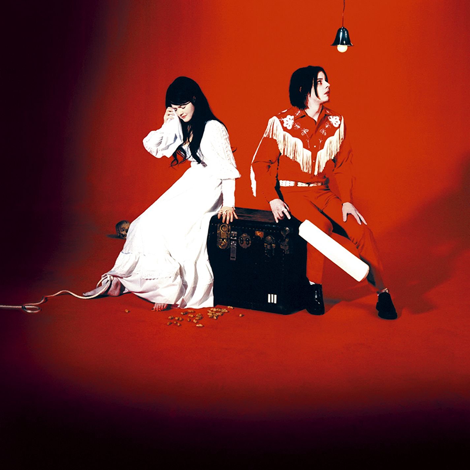

About the Album
Elephant is the fourth studio album from The White Stripes, the Detroit duo of Jack White and Meg White. Most of it was recorded in about two weeks in the spring of 2002 at Toe Rag Studios in London, on an eight-track tape machine with gear no newer than 1963.
Like every White Stripes record, the album's artwork uses only three colors: red, white and black. Elephant won the Grammy for Best Alternative Music Album, and "Seven Nation Army" won Best Rock Song.
New to the album? Start with the lead single.
"No computers were used during the writing, recording, mixing, or mastering of this record."
Elephant liner notes
Tracklist
- Seven Nation Army Lead single
- Black Math
- There's No Home for You Here
- I Just Don't Know What to Do with Myself
- In the Cold, Cold Night
- I Want to Be the Boy to Warm Your Mother's Heart
- You've Got Her in Your Pocket
- Ball and Biscuit
- The Hardest Button to Button
- Little Acorns
- Hypnotize
- The Air Near My Fingers
- Girl, You Have No Faith in Medicine
- It's True That We Love One Another
Credits
- Vocals and guitar
- Jack White
- Drums and vocals
- Meg White
- Guest vocals ("It's True That We Love One Another")
- Holly Golightly
- Spoken word ("Little Acorns")
- Mort Crim
- Produced by
- Jack White
- Engineered by
- Liam Watson
- Recorded at
- Toe Rag Studios and Maida Vale Studios, London
Singles
- Seven Nation Army
- The Hardest Button to Button
- I Just Don't Know What to Do with Myself
- There's No Home for You Here